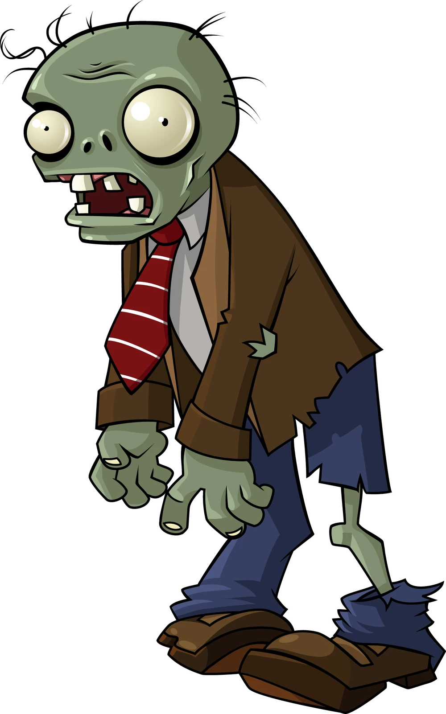
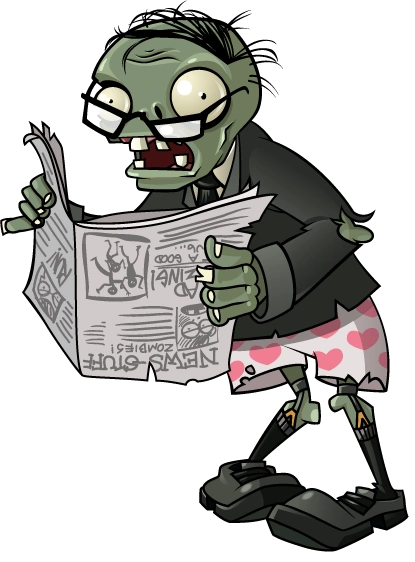

Welcome to the Zombie Brain Lab
Welcome to the Zombie Brain Lab. Our researchers have “scanned” the brains of zombies from Plants vs. Zombies and compared each one with a typical human brain. Look at the scans, read the reports, and decide whether the brain explains what the zombie does.
To start exploring, click on a zombie.
Case files

Observed behaviors
- Walks slowly and steadily toward the house
- Stops only to eat plants
- Keeps coming while it’s being hit, without dodging
- Keeps walking for a moment after losing its head
Image: Plants vs. Zombies © Electronic Arts. Not covered by this site’s Creative Commons license.

Observed behaviors
- Walks slowly, holding a newspaper in front of its face
- Bursts into rage when the paper is destroyed
- Moves much faster once it’s angry
Image: Plants vs. Zombies © Electronic Arts. Not covered by this site’s Creative Commons license.
How do real researchers study the brain?
Our zombie scans are made up, but real researchers use these tools:
| Tool | What it shows | One limitation |
|---|
| CT | Pictures of the brain’s structure, built from many x-rays | Uses radiation; less detailed than MRI |
|---|
| MRI | Detailed pictures of the brain’s structure, made with a strong magnet | Shows structure, not activity |
|---|
| fMRI | Which areas are active, by tracking blood flow and oxygen | Activity is tracked indirectly and a little behind real time |
|---|
| PET | Which areas are active, by tracking a radioactive tracer | Little detail, imprecise timing, and radiation |
|---|
| EEG | Electrical activity, recorded from the scalp, millisecond by millisecond | Poor at showing where activity comes from |
|---|
| Lesion studies | What changes after damage to one area (e.g., stroke) | Damage rarely stays in just one area |
|---|
Our zombie “scans” are drawn as if they came from MRI, because MRI shows the brain’s structure (Spielman et al., 2020, §3.4). (Unchecked by a person; AI research only.)
But some differences in a zombie’s brain might be chemical rather than structural. One science writer suggests that a zombie’s slow, jerky walk could come from a loss of dopamine, a chemical messenger involved in movement (Goodpaster, 2023). (Unchecked by a person; AI research only.) An MRI shows the brain’s structure, so it wouldn’t reveal a problem like that. Science can be thwarted by the equipment available in the lab!
Getting a zombie to hold still in an MRI scanner is its own research challenge: the machine is loud, the scan takes a while, and the subject keeps asking for brains.